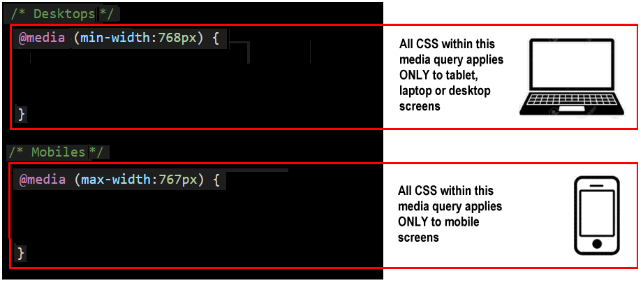
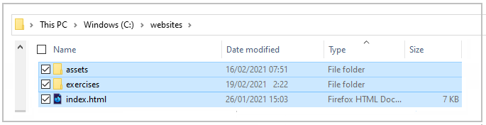

Learning Goals
At the end of this Tutorial, you will be able to:
- Add media queries to a CSS file for the 768px breakpoint.
- Use media queries to create responsive layouts on a web page.
About Responsive Web Design (RWD)
As a web designer, you have no control over the size of the screen on which your web pages will be displayed.

The term viewport is used to describe that area of a screen that displays a web page’s content. It excludes any menus, web address bars, bookmark bars, scroll bars or other similar elements.
Creating web pages that respond or ‘scale‘ appropriately to the viewport size of a user’s device is called Responsive Web Design (RWD). Responsive web pages adjust the layout, placement, and size of their elements so that the page looks good no matter what screen it’s being viewed on.
About screen resolution
Screen resolution refers to the number of pixels displayed on a monitor screen. It is typically expressed as (horizontal pixels) x (vertical pixels).
According to StatCounter, the most widely-used desktop/laptop screen resolutions are:
- 1920x1080 (21.93%)
- 1366x768 (21.09%)
- 1536x864 (9.6%%)
- 1440x900 (6.7%)
- 1280x720 (5.31%)
For mobiles phones, the figures are:
- 360x640 (11.75%)
- 414x896 (7.91%)
- 375x667 (6.26%)
- 360x780 (6.06%)
- 360x760 (5.17%)
And for tablet devices, the figures are:
- 768x1024 (44.11%)
- 1280x800 (7.38%)
- 800x1280 (5.89%)
- 601x962 (4.96%)
- 962x601 (3.5%)
For tablets and mobiles, it is important to take account of the device orientation, where portrait means ‘standing up’ and landscape means ‘sideways’.
In summary, viewport widths can be grouped as follows:
- Mobiles: About 360px to 414px (portrait)
- Tablets: About 601px to 962px (portrait)
- Desktops/Laptops: About 1280px to 1920px
About breakpoints
When designing for such a wide range of viewport sizes, web designers rely on what are called breakpoints. These are the viewport widths at which the page layout needs to change.
For example, a three-column layout may display nicely on larger screens – but on mobile devices it will necessary to transform the layout into just a single column.
For some complex layouts, it may be necessary to use several breakpoints. For most designs, however, it is sufficient to use just one breakpoint: 768px.
This is the viewport width of an Apple iPad in portrait mode. So:
- Big viewports: These are viewports that are 768 pixels wide or wider. In other words, viewports with a min-width value of 768px.
- Small viewports: These are viewports that are 767 pixels wide or narrower. In other words, viewports with a max-width value of 767px.
About media queries
When combined with breakpoints, media queries use the @media rule to create conditional style rules in CSS. In other words, a block of CSS properties will be applied to the linked web page only if a certain condition is true.
Media queries are most commonly used to adjust the horizontal and vertical spacing on a web page according to the viewport width.
For example, suppose you wanted ‘white space’ at the left and right of the web page content.
- On ‘big screens‘ (768px or wide), you might want the web page content to fill only 60% of the viewport width.
- On ‘small screens‘ (up to 767px width), however, you might want the web page content to fill 90% of the viewport width.

To achieve this, you would enter the following two media queries in your stylesheet.
In the above example, the media query for desktop screens is entered first in the CSS file, followed by the media query for mobile screens. But the order in which media queries appear in a stylesheet does not matter.
Note that all media queries have both a start point and an end point.
It is not enough to ‘open’ them. You must also ‘close’ them.
If you fail to close a media query, all the style rules that follow it in the remainder of the CSS file – which could be many hundreds of lines long – will be controlled by the unclosed media query.
Below are two media queries, but with the style rule for the h1 selectors written on a single line.

Note the two pairs of curly braces:
- An inner pair of opening and closing curly braces encloses the style rules(s) for the CSS selector, in this case, h1.
- And an outer pair of opening and closing curly braces that encloses the media query.
It is a good idea to use the Tab key along wth VS Code’s indentation guides (thin vertical lines) to ensure you do not forget the add the correct number of opening and closing braces when working with media queries in your stylesheets.

Updating your stylesheets with media queries
Follow the steps below to make your web pages responsive by adding media queries to their stylesheets.
- In VS Code, open your global.css, style-1.css and style-2.css stylesheet files.
- Replace the current CSS padding style rule with the following, and save your CSS files when finished.
/* Desktops */ @media (min-width: 768px) { body { padding: 4% 20% } } /* Mobiles */ @media (max-width: 767px) { body { padding: 8% 5% } }
The upper part of your three CSS files should now look as shown below.
- In VS Code, open your style-3.css stylesheet file, replace the current CSS padding style rule with the following, and save your CSS file when finished.
/* Desktops */ @media (min-width: 768px) { section { padding: 4% 20% } } /* Mobiles */ @media (max-width: 767px) { section { padding: 5% 5% } }
In simple terms, you have:
- Entered two style rules in the same CSS file: one rule for ‘big’ screens, and the other rule for ‘small’ screens.
- Included with each style rule a condition statement that tells the web browser: only apply this style if the user’s viewport is less than or greater than a certain width.

All your four web pages now display responsively on mobile and desktop or laptop screens.
Uploading your files to GitHub
Your final task is to upload your web pages and stylesheets to your account on GitHub.
- Open a new tab in your web browser and go to GitHub.com. If you are not already signed in to your GitHub account, sign in now.

- On your GitHub home page, click the name of the repository (‘repo’) that holds your web pages. Its name will look as follows, where username is your chosen username on GitHub.
username.github.io

- On the next GitHub screen displayed, near the right of the screen, you can see a button named Add file. Click on it.

- From the dropdown list displayed, choose the option Upload files.

- In File Explorer (Windows) or Finder (Apple Mac), drag-and-drop your index.html file and your 📁 assets and 📁 exercises sub-folders to upload them to your repository on GitHub. 
- Scroll down to the bottom of the GitHub screen, and accept or edit the short message (Add files via upload) in the Commit changes box.
- Finally, click the green Commit changes button to upload your entire exercises sub-folder and all the files it contains.

Your web pages are now published on GitHub at web addresses similar to the following, where username is the username you have chosen for your GitHub account:
https://username.github.io/index.html
– or simply –
https://username.github.io
https://username.github.io/exercises/page-1.html
https://username.github.io/exercises/page-2.html
https://username.github.io/exercises/page-3.html
It may take a few minutes for your uploaded files to appear on GitHub.